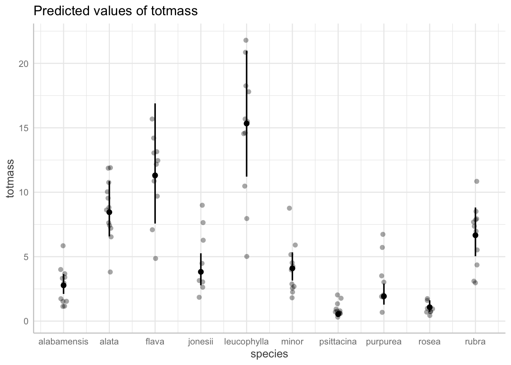
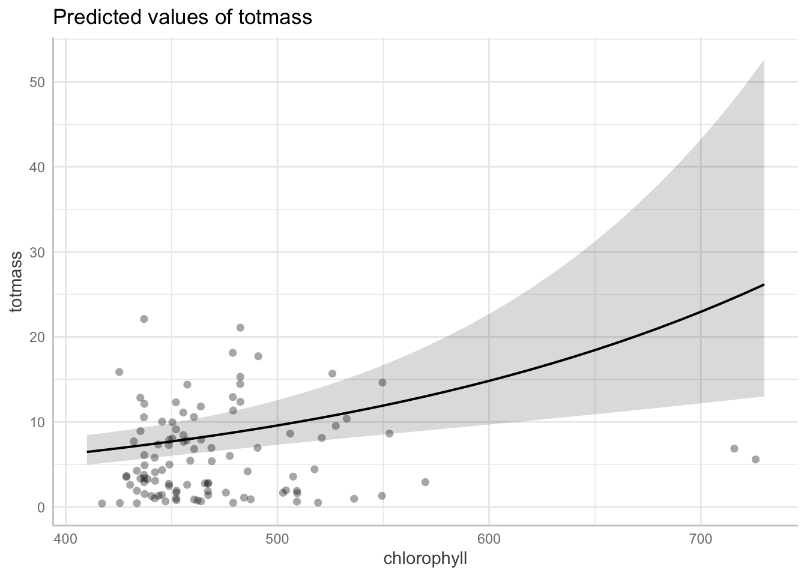

QUESTION: How do Sarracenia characteristics predict biomass?
Code
library(tidyverse)library(here)library(janitor)library(ggeffects)library(performance)library(naniar) # or equivalentlibrary(flextable) # or equivalentlibrary(car)library(broom)library(MuMIn)# would be nice to havelibrary(corrplot)library(AICcmodavg)library(GGally)
6. INTRODUCTION
Sarracenia, or carnivorous pitcher plants, have specific anatomy that allows them to trap and digest insects (Adlassnig et al, 2011). These digested insects are important sources of nitrogen and phosphorus for carnivorous plants (Farnsworth & Ellison, 2008). They have cone shaped leaves from which it is difficult for an organism to remove itself once it has fallen in (Adlassnig et al, 2011). One interesting fact about Sarracenia is that a specific species called Sarracenia purpurea can be used to treat type 2 diabetes and illnesses like tuberculosis, with the potential to be used as an anti-cancer treatment (Huang et al, 2022). Therefore, many may be interested in Sarracenia research for its potential for development of life-saving drugs. In order to understand the relationships that help or hinder Sarracenia growth, it makes sense to research the morphological, physiological, or taxonomic characteristics that predict its biomass. For example, such research could advance the understanding of how to harness these plants for medicinal properties. In this document, we are addressing the question: How do Sarracenia characteristics predict biomass? The null hypothesis we are testing is that none of the characteristics predict biomass. The alternative hypothesis is that at least one of the variables predicts biomass.
A variety of different species of Sarracenia were used in this study. Their Amass (mass-based light-saturated photosynthetic rate of youngest leaf) and above ground size were measured before beginning treatements. Large species were fed 0-0.10 g of finely ground wasps, intermediate sized species were fed 0-0.5 g, and small species were fed 0-0.25 g. Two plants of each species were assigned to one of these feeding levels and 120 plants total were treated. Plants were fed once per week for 7 weeks (Environmental Data Initiative: https://portal.edirepository.org/nis/metadataviewer?packageid=knb-lter-hfr.109.18) # CITE THIS
We used open access data from the EDI Portal in an attempt to understand the overarching question: How do Sarracenia characteristics predict biomass? We selected the following variables for the analysis: chlorophyll (chlorophyll a + b content (mg/g) of youngest fully-expanded leaf produced by the plant), amass (mass-based light-saturated photosynthetic rate of youngest leaf (units: nmol CO2 • g-1 • s-1), sla (specific Leaf Area (cm2/g) of youngest fully-expanded leaf produced by the plant), num_phylls (number of phyllodes produced by each plant), num_lvs (total number of pitchers and phyllodes produced by each plant), totmass (total above- and below-ground plant biomass), species (species of pitcher plant used – all Sarracenia), and feedlevel (grams of ground hymenoptera fed per week). We used a linear regression model to analyze the relationship between the above variables and biomass.
Visualize the missing data (see figure below): We are interested in looking at how the factors in each column affect total mass of the plants, and we are not yet sure how they will do so. We are not sure how the data was collected and cannot rectify the NAs by finding missing data in old records. Therefore, we drop the NA values to get the most accurate picture of their relationships.
Code
missing_dat <-gg_miss_var(plant) +labs(caption ="There is missing data in 5 columns: cholorphyll, amass, sla, num_phylls, and num_lvs")missing_dat
Code
#lots of chlorophyll, amass, sla, num_phulls, num_lvs #totmass, species, feedlevel don't have missing data #we are interested in looking how factors affect totmass #we do not know how these will affect, so we will drop them
Subsetting data by dropping NAs:
Code
#get rid of the missing values from the above visualization plant_subset <- plant|>drop_na(sla, chlorophyll, amass, num_lvs, num_phylls)#103 observations compared to the original 120
Visualization of Pearson’s correlation between variables: This plot indicates that none of the investigated variables have a notably strong relationship, since all are < |0.7|. The strongest positive relationship is between sla () and amass and the strongest negative relastionship is between num_lvs and amass.
Code
#plot to visually represent pearson's r between different variables in the dataset #calculate pearson's r for numerical predictors only plant_cor <- plant_subset |>#select only the numerical predictor variables select(feedlevel:num_phylls) |>#cor calculates various correlation metrics, pearsons, kendall, spearman --> we will use pearson cor(method ="pearson") #output is a correlation matrix, diagonal = variables compared to themselves, above and below is correlation with another variable #creating a correlation plot #diagonal is correlation between variable and itself -- can edit this according to an #above and below diagonal are identical cor_plot <-corrplot(plant_cor, #change the shape of what is in the cells method ="ellipse", #right and left pointing represents whether relationship is positive or negative#show coefficients and choose color for them addCoef.col ="black",mar=c(1,1,2,1))title(main="title", sub="Numbers in black represent the correlation between overlapping variables in each box. The ellipses pointing to the right represent a positive relationship, while those to the left represent a negative relationship. Colors represent strength of the relationship along a spectrum")
Create a plot of each variable compared against the other (does not calc correlation, just a “pairs plot”) e. Visualization of relationship between variables????
Code
#NOT SURE HOW TO DO CAPTION HERE ???plant_subset |>#select only the numerical predictor variables select(species:num_phylls) |>ggpairs() #lots of plots, pearson's coefficients
Code
#this is usually part of exploratory analysis #gives a sense of how the variables are related to each other #USE ACTIVE VOICE WHEN EXPLANING #see diagonal, top and bottom #mostly, basic scatterplpot between two variables #good way to get a visual first sense if there is a relationship between the two variables -- "sit and look at it"
Starting regression here
(example writing) To determine the relationships between numerical variables in our dataset, we calculated pearson’s r and visually represented correlation using a correlation plot.
(example) To determine how species and physiological characteristics predict biomass, we fit multiple linear models.
The null model establishes predicted values by chance, rather than based on the variables we are interested in (there are not predictors in the model). In contrast, the full model establishes predicted values based off of each of the different variables we are interested in (has the response variable and all of the predictors).
Code
#write null model -- specify using "1" as predictor null <-lm(totmass ~1, data = plant_subset)#specify full model with everything in it full <-lm(totmass ~ species + feedlevel + sla + chlorophyll + amass + num_lvs + num_phylls, data = plant_subset)
We visually assessed normality and homoskedasticity of residuals using diagnostic plots for the FULL MODEL: These plots indicated that the residuals are not homoskedastic, since the points are clumped together towards the beginning of the line in both the residuals vs fitted and the scale-location plot. The Normal Q-Q plot shows some deviation from the line on both ends, but there are no outliers affecting the distribution, since there are no labeled points outside of the dotted lines. We found that the residuals are neither normally distributed nor homoskedastic using the Shapiro-Wilk test (null = variable of interest (i.e. the residuals) are normally distributed) and the Breusch-Pagan test (null = variable of interest (residuals) has constant variance).
Code
par(mfrow =c(2,2))plot(full)
Code
#they look normal BUT residuals clumped at the beginning and random at the end -- probs heteroskedastic#kind of borderline...#we can do statistical test to check normality and homoskedasticity
Code
#performance packagecheck_normality(full) #warning -- non-normality of residuals --> this is typical for a large dataset
Warning: Non-normality of residuals detected (p < .001).
Code
#but it looks normal on the diagnostics check_heteroscedasticity(full) #seems like residuals are heteroskedastic, but we knew this
#THE ASSUMPTIONS OF LINEAR REGRESSIONS ARE NOT MET #ONE OF THE BEST WAYS TO MAKE IT WORK IS TO TRANSFORM THE RESPONSE VARIABLE (ln, log, ect) --> idea is that the residuals will be transformed to be normal
Since the full model did not show normally distributed and homoskedastic residuals, we tried transforming the data using log() in hope that the residuals will now meet these assumptions. In this case, we log transformed the response variable. #back transform this when reporting results….all estimates of slopes will be on a log scale but easier to talk about if you back transform – exponentiate whatever the slope is
Code
null_log <-lm(log(totmass) ~1, data = plant_subset)full_log <-lm(log(totmass) ~ species + feedlevel + sla + chlorophyll + amass + num_lvs + num_phylls, data = plant_subset) #hope that residuals will now be normally distpar(mfrow =c(2,2))plot(full_log) #plots look much better now
Code
check_normality(full_log) #normal
OK: residuals appear as normally distributed (p = 0.107).
Code
check_heteroscedasticity(full_log) #homoskedastic
OK: Error variance appears to be homoscedastic (p = 0.071).
Code
#all interpretation will be based on transformed response, have been natural log transformed
#transformation with GVIF and DF to make value that can be compared #does not seem like any are inflating the R2 because all of the values are lower than 1 #we evaluated multicollinearity by calculatting generalized variacne inflcation factor and determined that....this model did not display aspects of collinearity based on the GVIF plot
Try some more models
addressing the question: what set of predictor variables best explains the response?
Code
#have to make biological decisions about which predictors to include in the model #hw: to choose two more models and explain bio why those two were chosen in the model #go through same steps as you would for all models model2_log <-lm(log(totmass) ~ species, data = plant_subset)
check assumptions for model2;
Code
par(mfrow =c(2,2))plot(model2_log)
Code
check_normality(model2_log)
OK: residuals appear as normally distributed (p = 0.374).
Code
check_heteroskedasticity(model2_log)
OK: Error variance appears to be homoscedastic (p = 0.100).
Code
#new model does not mean anything if it does not fit the assumptions of linear regression #need to check this before you start doing anything else
Compare models using Akaike’s Information Criterion(AIC) values:
Code
AICc(full_log)
[1] 133.9424
Code
AICc(model2_log)
[1] 157.5751
Code
AICc(null_log)
[1] 306.0028
Code
#get corrected AIC values #sort of what you would expect #looking at diff in AIC values amongst logs #want least complex model that best predicts response # Full log has the lowest AIC #SOMETIMES all of the predictors has the best value instead of the subsets, still need to try subsets -- hw formulate models that make bio sense MuMIn::AICc(full_log, model2_log, null_log)
# all estimates on the scale of the log transformed response # can back transform the estimates
use ggpredict to backtransform the
Code
#visualizations of model predictions model_pred <-ggpredict(full_log, terms ="species", back.transform =TRUE)#reporting results on the scale of the original variable -- fine, you just have to be transparent about it #could explain by saying "for ease of interpretation" #all based on summary table with standard error of model object model_pred
#all else held constant (see values under Adjusted for section -- uses mean of the section) you would expect total biomass for each species to be (predicted) and report confidence interval #look at this for all that have significant effect plot(model_pred, add.data =TRUE) #plot that displays all predictions for species and total mass -- plotted along the original scales

Code
#points are model estimates #bars are ... ? #jittered points are the orginal dataplot(ggpredict(full_log, terms ="chlorophyll", back.transform =TRUE), add.data =TRUE) #ribbon is confidence interval around chlorophyll slope estimate

Code
#back transformation takes the estimates from summary and calculates the estimate relative to the reference level, calc confidence interval using standard error and t value, then exponentiates all of that #none of the predictors are back transformed #when writing results: can say that model with log transformed response variable includes ___ ___ ___ ____. What we found is that there is a sig effect of ___ ___ ___ ____. THEN DECIDE WITH PREDICTOR YOU WANT TO HIGHLIGHT #all else held constant, you would expect these ranges of total mass for each species....plot(ggpredict(full_log, terms ="feedlevel", back.transform =TRUE), add.data =TRUE)
table <-tidy(full_log, conf.int =TRUE) #conf.int most useful when you have numerical or continuous predictors table #turns whole summary object into a table...
#change the p value numbers if they're really small#using mutate#change the estimates, standard error, and t -stats to round to...#make it into a flextable #flextable() |>#fit it to the viewer #autofit()
#HW: you do not need to create an ANOVA table
Code
#different types of ANOVAS#anova in base r calcs the #type 1: you think the order of the variables in the table matters #type2: the order does not matter, but there might be some interaction in the model #type 3: the order matters and so does the interaction in the model
Model construction with visual and statistical assumption checks for three additional models:
Code
#so does this mean i try more model runs with different predictor variables ?? how does this work? # akaike information criterion -- look for model with the lowest AIC value # only values for compare diff versions of a model with diff permutations of the predictor variables # only meaningful as a relative measure #how to deal with collinearity? when you have multiple predictors that might be correlated with each other #chlorophyll content correlated with phosphorous content? #variance inflation factor -- looking for any predictor that inflates the predictive capacity of the model --> generally >5 is cause for concern